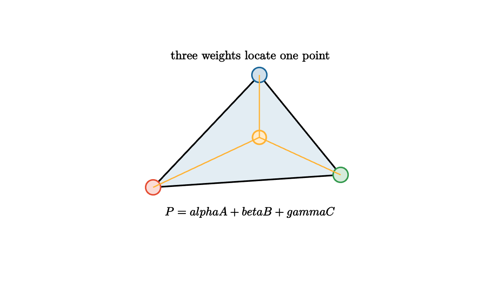

Barycentric Coordinates Blend Inside Triangles
After a polygon becomes triangles, the next question is how to speak inside one triangle. A pixel rarely lands exactly on a vertex. A simulation point may sit in the middle of a face. Graphics needs a way to blend vertex data across the interior.
Barycentric coordinates give that language. If a triangle has vertices $A$, $B$, and $C$, then any point $P$ in its plane can be written as
with
Inside the triangle, all three weights are nonnegative. At vertex $A$, the weights are $(1,0,0)$. Along the edge from $B$ to $C$, the weight $\alpha$ is zero.

source
let soft = |col, amount| lerp(WHITE, col, amount)
let A = 1.55l + 0.75d
let B = 1.45r + 0.55d
let C = 0.15r + 1.05u
let P = 0.15r + 0.05u
mesh diagram = [
fill{soft(BLUE, 0.12)} stroke{BLACK, 2.4} Polygon([A, B, C]),
center{A} fill{soft(RED, 0.2)} stroke{RED, 2.2} Circle(0.12),
center{B} fill{soft(GREEN, 0.2)} stroke{GREEN, 2.2} Circle(0.12),
center{C} fill{soft(BLUE, 0.2)} stroke{BLUE, 2.2} Circle(0.12),
center{P} fill{soft(ORANGE, 0.25)} stroke{ORANGE, 2.4} Circle(0.11),
stroke{ORANGE, 1.8} Line(P, A),
stroke{ORANGE, 1.8} Line(P, B),
stroke{ORANGE, 1.8} Line(P, C),
center{1.35u} Text("three weights locate one point", 0.70),
center{1.15d} Tex("P=\\alpha A+\\beta B+\\gamma C", 0.68)
]The area picture is the most geometric way to remember the weights. The weight at $A$ is the fraction of the total triangle area opposite $A$, meaning the area of triangle $PBC$ divided by the area of $ABC$. The other weights come from $PCA$ and $PAB$.
This explains why the weights add to one. The three small triangles partition the big triangle. Move $P$ toward $A$, and the area opposite $A$ grows while the others shrink.
source
let soft = |col, amount| lerp(WHITE, col, amount)
let A = 1.55l + 0.75d
let B = 1.45r + 0.55d
let C = 0.15r + 1.05u
"Triangle"
mesh scene = [
fill{soft(BLUE, 0.1)} stroke{BLACK, 2.4} Polygon([A, B, C]),
center{A} color{RED} Text("A", 0.62),
center{B} color{GREEN} Text("B", 0.62),
center{C} color{BLUE} Text("C", 0.62),
center{1.35u} Text("weights live on the triangle", 0.68)
]
play Fade(0.7)
"Areas"
let P = 0.1r + 0.0u
scene = [
fill{soft(RED, 0.14)} stroke{RED, 1.8} Polygon([P, B, C]),
fill{soft(GREEN, 0.14)} stroke{GREEN, 1.8} Polygon([P, C, A]),
fill{soft(BLUE, 0.14)} stroke{BLUE, 1.8} Polygon([P, A, B]),
stroke{BLACK, 2.4} Polygon([A, B, C]),
center{P} fill{soft(ORANGE, 0.25)} stroke{ORANGE, 2.4} Circle(0.1),
center{1.35u} Text("opposite areas become weights", 0.66)
]
play Trans(1.0)
"Blend"
scene = [
fill{soft(ORANGE, 0.18)} stroke{BLACK, 2.4} Polygon([A, B, C]),
center{A} fill{soft(RED, 0.2)} stroke{RED, 2.2} Circle(0.12),
center{B} fill{soft(GREEN, 0.2)} stroke{GREEN, 2.2} Circle(0.12),
center{C} fill{soft(BLUE, 0.2)} stroke{BLUE, 2.2} Circle(0.12),
center{0.1r + 0.0u} fill{soft(ORANGE, 0.25)} stroke{ORANGE, 2.4} Circle(0.1),
center{1.35u} Text("colors, depth, and normals use the same blend", 0.62)
]
play Trans(1.0)For rasterization, barycentric coordinates are practical. Each pixel center is tested against the triangle. If the barycentric weights are all at least zero, the pixel is inside or on the boundary. The same weights then interpolate per-vertex values.
If vertices carry colors $R$, $G$, and $B$, the pixel color can be
If vertices carry depth values $z_A$, $z_B$, and $z_C$, the pixel depth is
If vertices carry texture coordinates, normals, or temperatures in a simulation, the same weighted average moves that data into the interior.
There is one graphics detail worth naming. After perspective projection, attributes that live in 3D need perspective-correct interpolation. The screen-space barycentric weights need help from the vertex $w$ coordinates so textures do not swim or warp across triangles. The conceptual role is still barycentric blending; the pipeline adjusts the arithmetic to respect the camera projection.
Outside points and signs
Barycentric coordinates also describe points outside the triangle. The weights still add to one, but at least one weight becomes negative. This is useful because an inside test can be written as a sign test:
With a consistent edge convention, rasterizers can evaluate edge functions that are proportional to barycentric weights. Moving one pixel to the right or one pixel up changes those edge functions by fixed increments. Hardware can therefore fill a triangle by simple additions rather than recomputing full determinants for every pixel.
The signs also tell which side of the triangle a point lies on. If $\alpha<0$, the point is outside across the edge opposite $A$. This makes barycentric coordinates useful in closest-point queries, collision tests, and mesh navigation.
Solving for the weights
The equation
with $\alpha+\beta+\gamma=1$ can be solved as a small linear system. Another common formula uses signed areas:
Here $[XYZ]$ denotes signed triangle area. The same determinant from orientation appears again. This is one of the satisfying patterns in computational geometry: orientation, area, inside tests, and interpolation are all facets of the same calculation.
Basis functions
In finite element methods, the barycentric weights are called linear basis functions. The function $\alpha$ equals one at vertex $A$ and zero along the opposite edge. The function $\beta$ does the same for $B$, and $\gamma$ for $C$. A field over the triangle can be approximated as
Graphics uses this for colors and normals. Engineering uses it for temperature, displacement, pressure, and many other quantities. The mathematics is shared: vertex values become an interior field through weights that add to one.
Barycentric coordinates are a good example of computational geometry serving graphics directly. A single coordinate system handles inside tests, interpolation, attribute transport, and finite element basis functions. Once a triangle has barycentric coordinates, every point inside it can borrow information from the vertices in a controlled way.